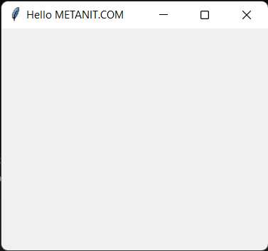
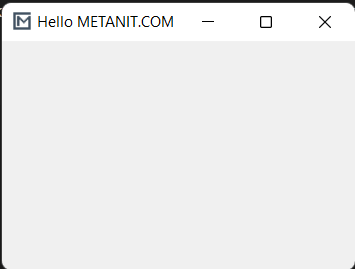

|
Основным компонентом графических программ является окно. Затем в
окно добавляются все остальные компоненты графического
интерфейса. В Tkinter окно представлено классом Tk. Например,
создание окна:
root = Tk()
Для отображения окна и взаимодействия с пользователем у окна
вызывается метод mainloop()
from tkinter import *
root = Tk()
root.mainloop()
Класс Tk обладает рядом методов и атрибутов, которые позволяют
установить различные аспекты окна. Некоторые из них.
Размеры и начальная позиция окна
По умолчанию окно имеет некоторые стандартные размеры. Для
установки размеров используется метод geometry(). Например,
определение окна с шириной в 300 единиц и высотой 250 единиц:
from tkinter
import *
root = Tk()
root.geometry("300x250")
root.mainloop()
По умолчанию окно позиционируется в верхний левый угол экрана с
небольшим смещением. Но мы можем изменить его положение, передав
нужные значения в метод geometry():
from tkinter import *
root = Tk()
root.geometry("300x250+400+200")
root.mainloop()
Теперь строка в методе geometry имеет следующий формат: "Ширина
x Высота + координатаX + координатаY". То есть при запуске окно
шириной в 300 единиц и высотой 250 единиц будет находиться на
400 пикселей вправо и на 200 пикселей вниз от верхнего левого
угла экрана.
Для получения данных о размере и позиции также можно
использовать метод geometry(), который возвращает данные
значения в виде строки в формате "widthxheight+x+y":
from tkinter
import *
root = Tk()
root.geometry("300x250+400+200")
root.update_idletasks()
print(root.geometry()) # "300x250+400+200"
root.mainloop()
Чтобы приложение еще до метода mainloop() принименило для окна
переданные ему значения по ширине, высоте и позиции, вызывается
метод root.update_idletasks(). В итоге вызов root.geometry()
возвратить строку "300x250+400+200"
По умолчанию мы можем изменять размеры окна. Тем не менее иногда
может потребоваться сделать размер окна фиксированным. В этом
случае мы можем использовать метод resizable(). Его первый
параметр указывает, может ли пользователь растягивать окно по
ширине, а второй параметр - можно ли растягивать по высоте.
Чтобы запретить растягивание по какой-либо стороне, необходимо
для соответствующего параметра передать значение False.
Например, запретим какое-либо изменение размеров:
from tkinter import *
root = Tk()
root.geometry("300x250")
root.resizable(False, False)
root.mainloop()
Также можно установить минимальные и максимальные размеры окна:
root.minsize(200,150) # минимальные размеры: ширина -
200, высота - 150
root.maxsize(400,300) # максимальные размеры: ширина - 400,
высота - 300
Установка заголовка
По умолчанию заголовок окна - "tk". Для установки заголовка
применяется метод title(), в который передается текст заголовка:
from tkinter import *
root = Tk()
root.title("Hello METANIT.COM")
root.geometry("300x250")
root.mainloop()

Установка иконки
Перед заголовком отображается иконка. По умолчанию это иконка
пера. С помощью метода iconbitmap() можно задать любую другую
иконку. Например, определим в одной папке с файлом приложения
какой-нибудь файл с иконкой, допустип, он называется
"favicon.ico" и используем его для установки иконки:
from tkinter import *
root = Tk()
root.title("Hello METANIT.COM")
root.iconbitmap(default="favicon.ico")
root.geometry("300x250")
root.mainloop()
через параметр default в метод iconbitmap передается путь к
иконки. В данном случае файл иконки располагается с файлом
приложения в одной папке, поэтому в качестве пути указывается
просто имя файла.
В качестве альтернативы для установки иконки также можно было бы
использовать метод iconphoto()
from tkinter
import *
root = Tk()
root.geometry("250x200")
root.title("Hello METANIT.COM")
icon = PhotoImage(file = "icon2.png")
root.iconphoto(False, icon)
root.mainloop()
Первый параметр метода iconphoto() указывает, надо ли
использовать иконку по умолчанию для всех окон приложения.
Второй параметр - объект PhotoImage, который собственно и
устанавливает файл изображения (здесь файл "icon2.png)
Однако что, если мы хотим, чтобы окно вообще не имело иконки? В
этом случае можно определить прозрачную иконку и также ее
подключать. Можно это сделать также динамически без наличия
реального файла:

from tkinter import *
import tempfile, base64, zlib
ICON =
zlib.decompress(base64.b64decode("eJxjYGAEQgEBBiDJwZDBysAgxsDAoAHEQCEGBQaIOAg4sDIgACMUj4JRMApGwQgF/ykEAFXxQRc="))
_, ICON_PATH = tempfile.mkstemp()
with open(ICON_PATH, "wb") as icon_file:
icon_file.write(ICON)
root = Tk()
root.title("Hello METANIT.COM")
root.geometry("300x250")
root.iconbitmap(default=ICON_PATH)
root.mainloop()
В данном случае создается временный файл иконки в памяти.
Перехват закрытия окна
from tkinter import *
def finish():
root.destroy() # ручное закрытие окна и всего приложения
print("Закрытие приложения")
root = Tk()
root.geometry("250x200")
root.title("Hello METANIT.COM")
root.protocol("WM_DELETE_WINDOW", finish)
root.mainloop()
Первый параметр метода protocol() представляет имя события, в
данном случае это "WM_DELETE_WINDO". Второй параметр
представляет функцию, которая вызывается при возникновении
события. Здесь эта функция finish(), в котором с помощью метода
destroy() вручную вызываем закрытие окна (а с ним и всего
приложения), а затем выводим на консоль некоторое сообщение.
Атрибуты окна
С помощью специального метода attributes() можно установить
отдельные атрибуты окна, для которых нет специальных методов. В
качестве первого параметра метод принимает название атрибута,
которое предваряется дефисом. А второй параметр - значение для
этого атрибута. Например, растяжение окна на весь экран:
root.attributes("-fullscreen", True)
Здесь атрибуту fullscreen передается значение True, благодаря
чему устанавливается полноэкранный режим.
Другой пример - установка прозрачности с помощью атрибута alpha:
root.attributes("-alpha",
0.5)
Значение 0.5 указывает на полупрозрачность.
Третий пример - отключение верхней панели окна (за исключением
заголовка и крестика для закрытия):
root.attributes("-toolwindow", True)
|